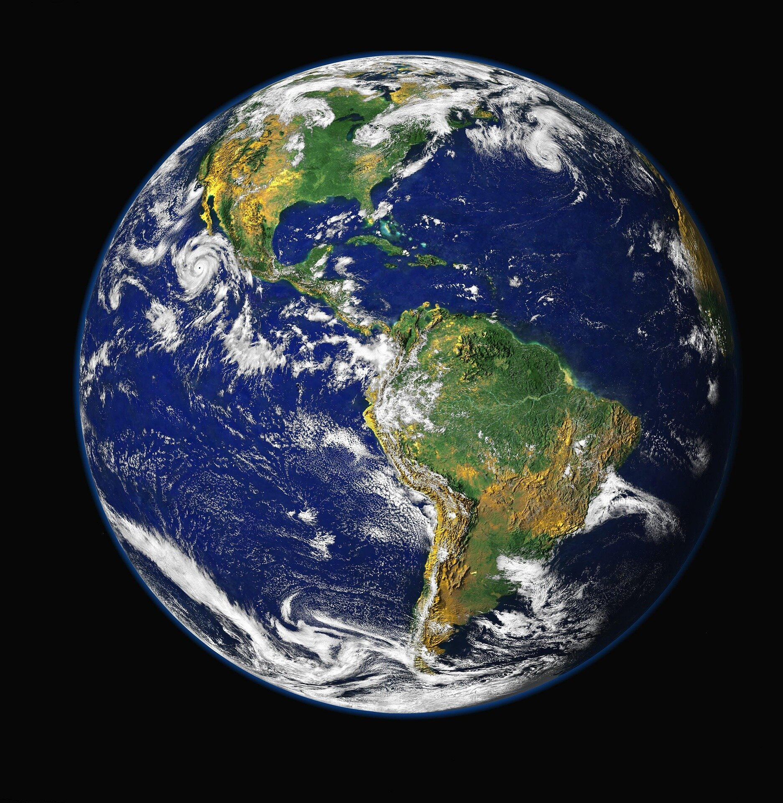

Mercur
Mercur este cea mai apropiată planetă de Soare și cea mai mică planetă a sistemului nostru solar. Nu are niciun satelit natural, întrucât este mult prea aproape de Soare pentru a putea menține în câmpul său gravitațional alt corp ceresc.
Venus
Venus este a doua planetă ca distanță față de Soare. Asemenea lui Mercur, nici Venus nu are niciun satelit natural, motivul fiind ca, cel mai probabil, la fel ca Mercur, Venus este mult prea aproape de Soare.
Pământ
Planeta noastră, Pământul, este a treia planetă de la Soare și singurul corp ceresc din întregul Univers pe care știm că există viață. Este cea mai mare și densă planetă terestră și are un singur satelit natural, bine-cunoscuta Lună.
Marte
Marte este a patra planetă ca distanță față de Soare și este a doua planetă ca mărime, după Mercur. Marte are o atmosferă subțire, formată în principal din dioxid de carbon.
Jupiter
Jupiter este a cincea planetă de la Soare și cea mai mare planetă din sistemul solar. Este o planetă compusă în principal din hidrogen și heliu. Jupiter are nu mai puțin de 79 de sateliți naturali.
Saturn
Saturn este a șasea planetă de la Soare și a doua cea mai mare planetă a sistemului nostru solar, după Jupiter. Este cunoscută datorită celebrelor inele planetare care o inconjoară.
Uranus
Uranus este a șaptea planetă de la Soare, a treia cea mai mare și a patra ca masă. Uranus este prima planetă descoperită cu telescopul în timpul epocii moderne.
Neptun
Neptun este a opta și cea mai îndepărtată planetă de la Soare din sistemul nostru solar.